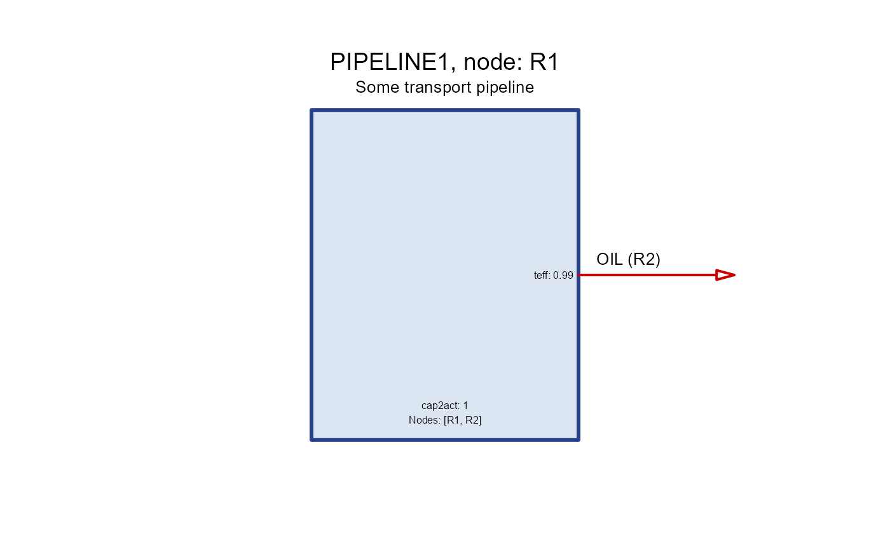
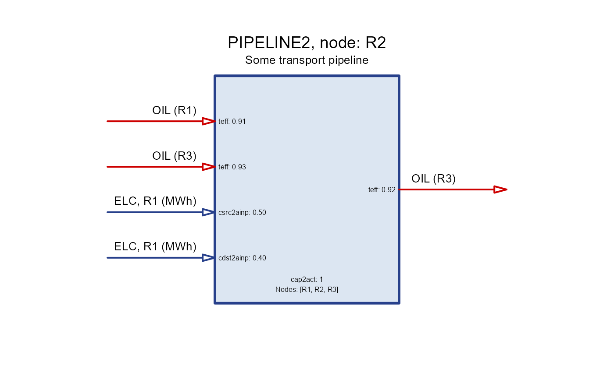

Constructor for trade object.
Usage
newTrade(
name = "",
desc = "",
commodity = character(),
routes = data.frame(),
trade = data.frame(),
fixom = data.frame(),
varom = data.frame(),
invcost = data.frame(),
olife = data.frame(),
start = data.frame(start = -Inf, stringsAsFactors = FALSE),
end = data.frame(end = Inf, stringsAsFactors = FALSE),
capacity = data.frame(),
capacityVariable = TRUE,
aux = data.frame(),
aeff = data.frame(),
cap2act = 1,
optimizeRetirement = FALSE,
misc = list(),
...
)Arguments
- name
character. Name of the trade object, used in sets.
- desc
character. Description of the trade object.
- commodity
character. The traded commodity short name.
- routes
data.frame. Source and destination regions. For bivariate trade define both directions in separate rows.
- from
character. Source region.
- to
character. Destination region.
- trade
data.frame. Technical parameters of trade.
- region
character. Region name to apply the parameter, NA for every region.
- year
integer. Year to apply the parameter, NA for every year.
- slice
character. Time slice to apply the parameter, NA for every slice.
- trade
numeric. Trade volume.
- fixom
data.frame. (not implemented!) Fixed operation and maintenance costs.
- varom
data.frame. (not implemented!) Variable operation and maintenance costs.
- invcost
data.frame. Investment cost, used when capacityVariable is TRUE.
- region
character. Region name to apply the parameter, NA for every region.
- year
integer. Year to apply the parameter, NA for every year.
- invcost
numeric. Investment cost.
- olife
numeric. Operational life of the trade object.
- start
data.frame. Start year when the trade-type of process is available for investment.
- region
character. Regions where the trade-type of process is available for investment.
- start
integer. The first year when the trade-type of process is available for investment.
- end
data.frame. End year when the trade-type of process is available for investment.
- region
character. Region name to apply the parameter, NA for every region.
- end
integer. The last year when the trade-type of process is available for investment.
- capacity
data.frame. (not implemented!) Capacity parameters of the trade object.
- capacityVariable
logical. If TRUE, the capacity variable of the trade object is optimized. If FALSE, the capacity is defined by availability parameters (
ava.*) in the trade-flow units.- aux
data.frame. Auxiliary commodity of trade.
- acomm
character. Name of the auxiliary commodity (used in sets).
- unit
character. Unit of the auxiliary commodity.
- aeff
data.frame. Auxiliary commodity efficiency parameters.
- acomm
character. Name of the auxiliary commodity (used in sets).
- region
character. Region name to apply the parameter, NA for every region.
- year
integer. Year to apply the parameter, NA for every year.
- slice
character. Time slice to apply the parameter, NA for every slice.
- trade2ainp
numeric. Trade-to-auxiliary-input-commodity coefficient (multiplier).
- trade2aout
numeric. Trade-to-auxiliary-output-commodity coefficient (multiplier).
- cap2act
numeric. Capacity to activity ratio.
- optimizeRetirement
logical. Incidates if the retirement of the trade object should be optimized. Also requires the same parameter in the
modelorscenarioclass to be set to TRUE to be effective.- misc
list. Additional information.
Details
Trade objects are used to represent inter-regional exchange in the model. Without trade, every region is isolated and can only use its own resources. The class defines trade routes, efficiency, costs, and other parameters related to the process. Number of routes per trade object is not limited. One trade object can have a part or entire trade network of the model. However, it has a distinct name and all the routs will be optimized together. Create separate trade objects to optimize different parts of the trade network (aka transmission lines).
Examples
PIPELINE1 <- newTrade(
name = "PIPELINE1",
desc = "Some transport pipeline",
commodity = "OIL",
routes = data.frame(
src = c("R1", "R2"),
dst = c("R2", "R3")
),
trade = data.frame(
src = c("R1", "R2"),
dst = c("R2", "R3"),
teff = c(0.99, 0.98)
),
olife = list(olife = 60)
)
#> Warning: NAs introduced by coercion to integer range
#> Warning: NAs introduced by coercion to integer range
draw(PIPELINE1)

PIPELINE2 <- newTrade(
name = "PIPELINE2",
desc = "Some transport pipeline",
commodity = "OIL",
routes = data.frame(
src = c("R1", "R1", "R2", "R3"),
dst = c("R2", "R3", "R3", "R2")
),
trade = data.frame(
src = c("R1", "R1", "R2", "R3"),
dst = c("R2", "R3", "R3", "R2"),
teff = c(0.912, 0.913, 0.923, 0.932)
),
aux = data.frame(
acomm = c("ELC", "CH4"),
unit = c("MWh", "kt")
),
aeff = data.frame(
acomm = c("ELC", "CH4", "ELC", "CH4"),
src = c("R1", "R1", "R2", "R3"),
dst = c("R2", "R2", "R3", "R2"),
csrc2ainp = c(.5, NA, .3, NA),
cdst2ainp = c(.4, NA, .6, NA),
csrc2aout = c(NA, .1, NA, .2)
),
olife = list(olife = 60)
)
#> Warning: NAs introduced by coercion to integer range
#> Warning: NAs introduced by coercion to integer range
draw(PIPELINE2, node = "R1")
 draw(PIPELINE2, node = "R2")
draw(PIPELINE2, node = "R2")

draw(PIPELINE2, node = "R3")